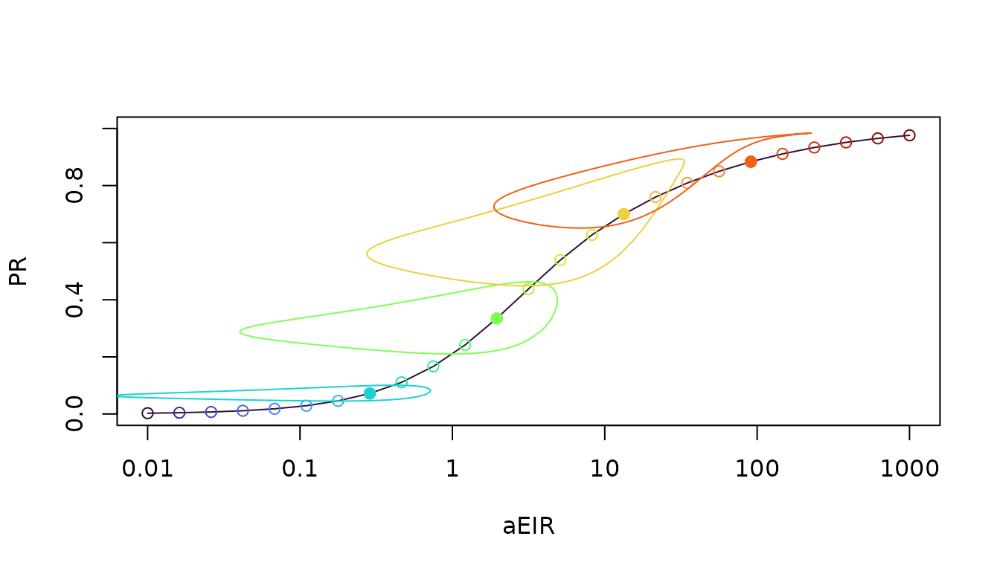
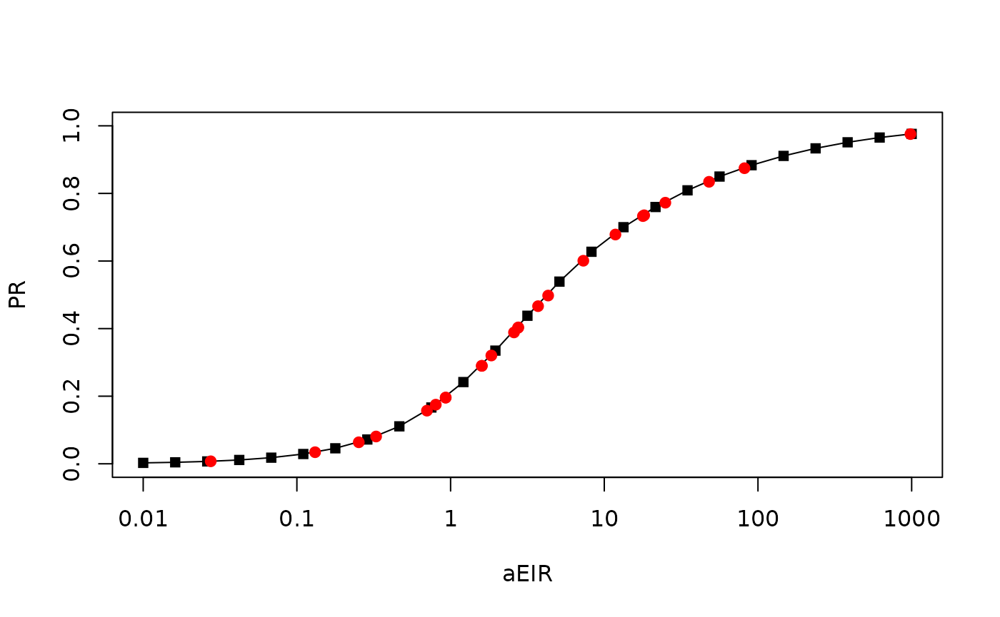

To calibrate models, a user might know the value of one term, but
they need to set the value of another.
ramp.work includes a set of functions that
do metric conversion. These functions require
xds_scaling
xde_pr2eir()
After running xds_scaling, the outputs
xds_obj$outputs$scaling has stored values of the EIR and
the PR. The function xde_pr2eir() uses linear
interpolation.
Example
The algorithms require the outputs of xds_scaling
Spar <- makepar_F_sin(bottom = 0.2, pw=2)
model <- xds_setup_eir(eir = 1/365, season_par = Spar)
model <- xds_scaling(model)
clrs <- viridisLite::turbo(length(model$scaling$eir))
xds_plot_eirpr(model, clrs=clrs)
add_eirpr_orbits(c(8, 12, 16,20), model, clrs=clrs)
We can create 50 randomly chosen values of the PfPR, and output the associated PfEIR values
prs = c(0.001, runif(25, 0, 1), 0.999)
preir_i = xds_pr2eir(prs, model)The function flags any values that are outside of the acceptable range. This may not seem important for the SIS model, but the range of other models can be bounded, so we don’t want to return nonsense values.
preir_i$errors## pr1 pr2 pr3
## 0.0010000 0.9805397 0.9990000We can plot the others:
xds_plot_eirpr(model)
with(model$scaling, points(aeir, pr, pch = 15))
with(preir_i, points(365*eir, pr, pch = 19, col = "red"))